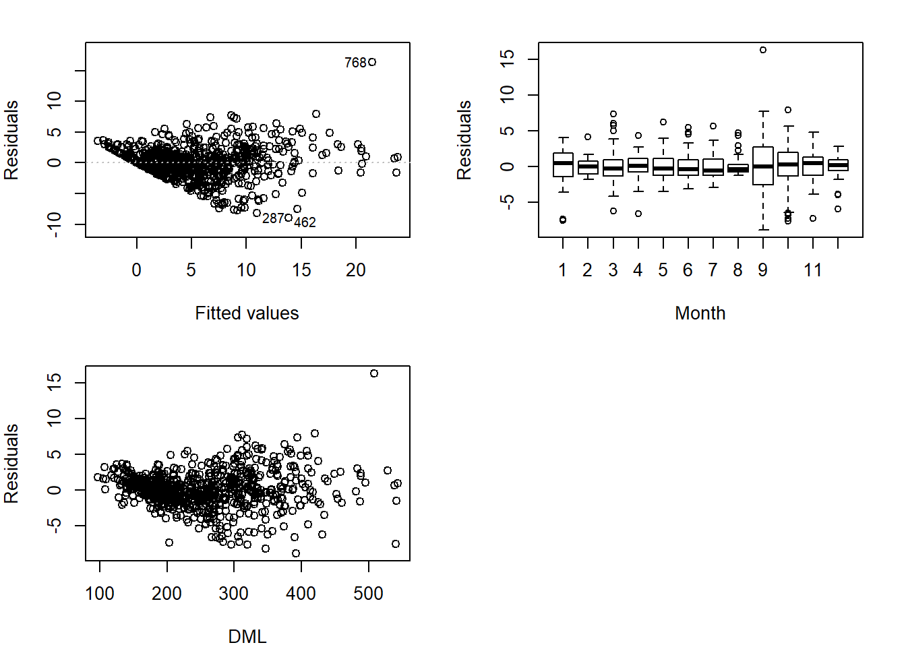
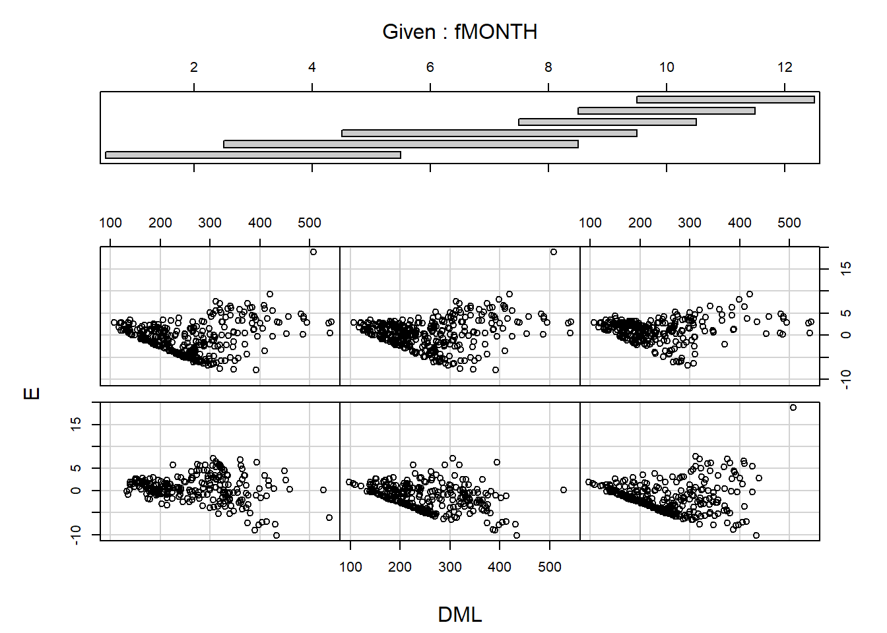
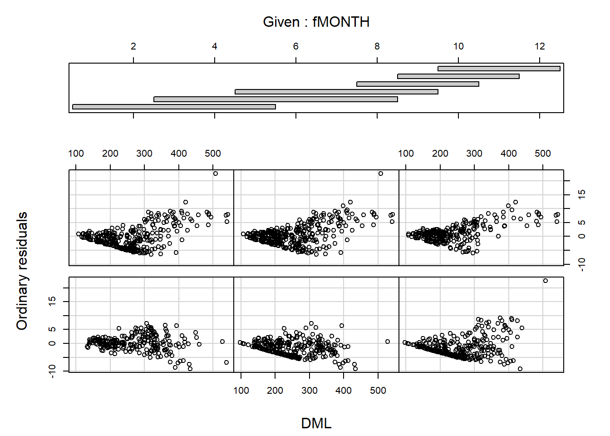
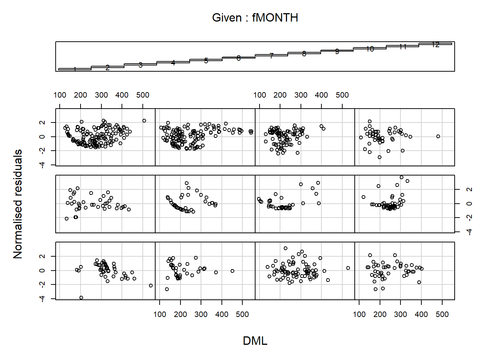
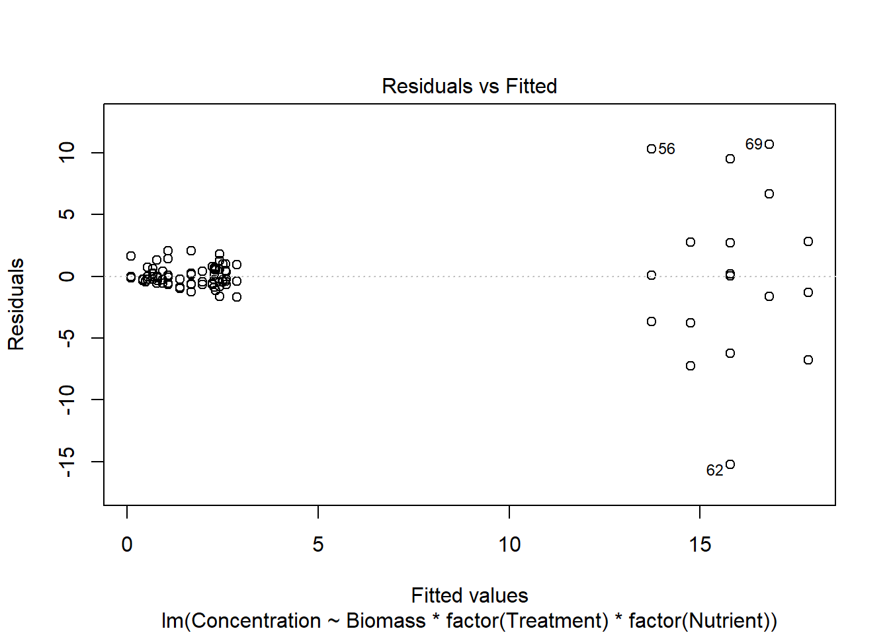
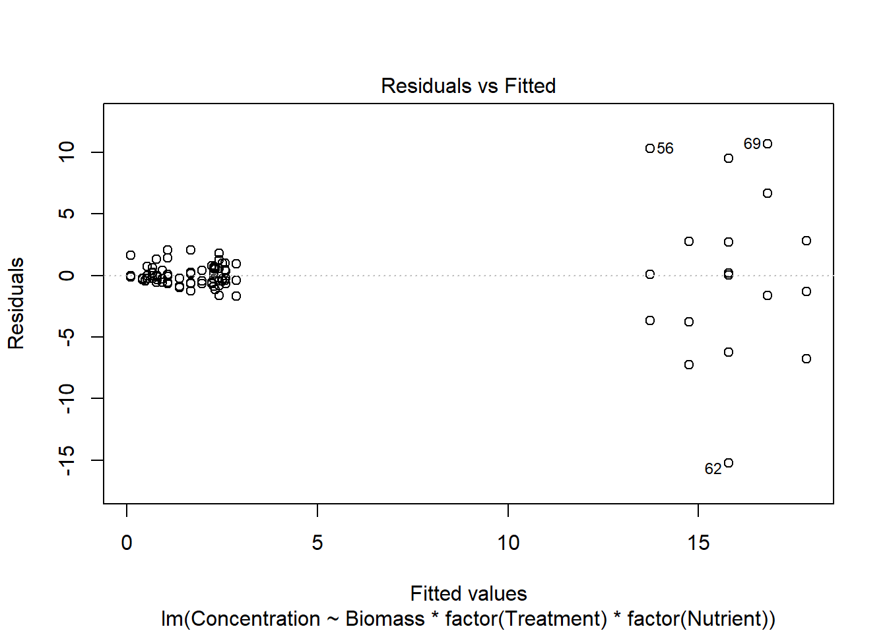
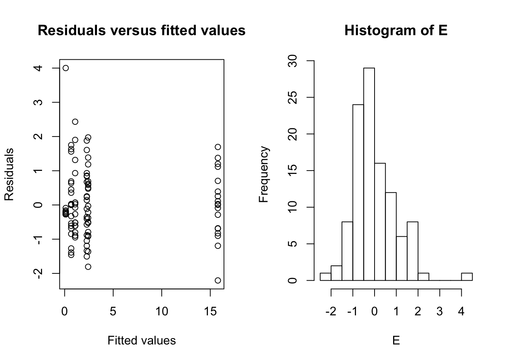
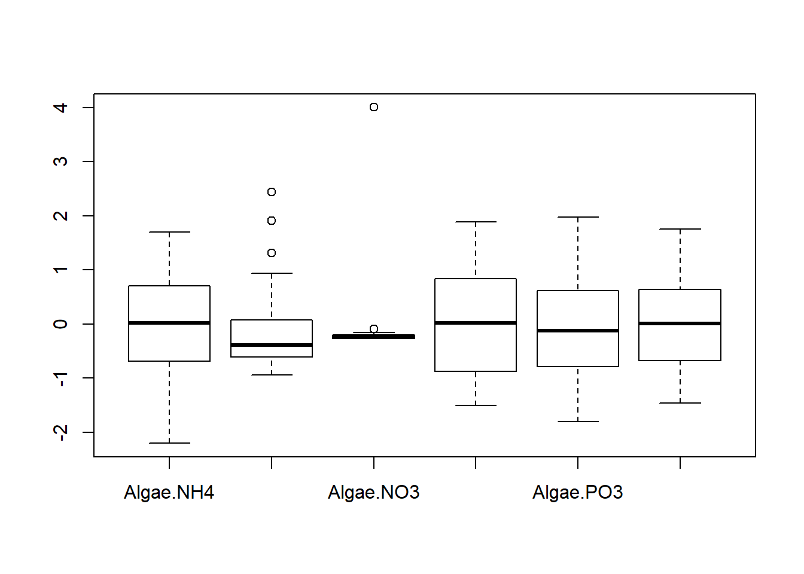
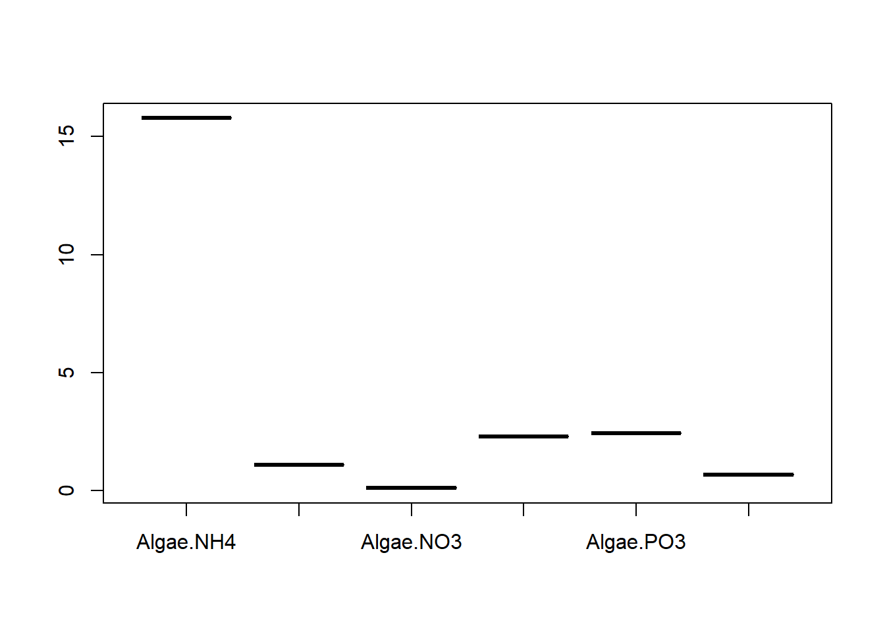

Dealing with heterogeneity
Tad & Anna Rasmussen
Assigned Reading:
Chapter 4 from: Zuur, A. F., Ieno, E. N., Walker, N., Saveliev, A. A. and Smith, G. M. 2009. Mixed Effects Models and Extensions in Ecology with R. Springer. link
Key Points
From Chapter 2
“In none of these [35] real data sets could we find a non-trivial example for a linear regression model for which all assumptions held.”
Heterogeneity
One frequently violated assumption = homogeneity, i.e., that residuals are normally distributed with a mean of 0 and a fixed variace, σ2:
- \(Y_i = \alpha + \beta_1 X_{1i} + \beta_2 X_{2i} + \epsilon_i\)
- \(\epsilon_i \sim N(0, \sigma^2)\)
How to check for homogeneity
Residuals vs. fitted values (Fig 4.2a)
How to identify source of variation in residuals
Residuals vs. explanatory variables (Fig. 4.2b, c)
Many variance structures (Table 4.1)
V1<-varFixed(∼DML)- \(\epsilon_i \sim N(0, \sigma^2 \times \mathrm{DML}_i) \ \ i = 1, \ldots, 768\)
V1<-varIdent(form= ∼ 1 | fMONTH)- \(\epsilon_{ij} \sim N(0, \sigma_j^{2}) \ \ j = 1, \ldots, 12\)
V1<-varPower(form =∼ DML)- \(\epsilon_{ij} \sim N(0, \sigma^2 \times |\mathrm{DML}_i|^{2\delta})\)
V1<-varPower(form =∼ DML | fMONTH)- \(\epsilon_{ij} \sim N(0, \sigma^2 \times |\mathrm{DML}_{ij}|^{2\delta_j})\)
V1<-varExp(form =∼ DML)- \(\epsilon_{ij} \sim N(0, \sigma^2 \times e^{2 \delta \times \mathrm{DML}_{ij}})\)
V1<-varConstPower(form =∼ DML)- \(\epsilon_{ij} \sim N(0, \sigma^2 \times (\delta_1 + |\mathrm{DML}_{ij}|^{\delta_2})^2)\)
V1<-varComb(varIdent(form =∼ 1 | fMONTH), varExp(form =∼ DML))- \(\epsilon_{ij} \sim N(0, \sigma^2_j \times e^{2 \delta \times \mathrm{DML}_{ij}})\)
How to choose variance structure? - AIC, e.g., AIC(M.lm, M.gls1, M.gls2)
Suggested protocol
- Fit a full model
- Plot standardized residuals vs. each predictor
- If variance shows a relationship with any predictor, re-fit model with a modified variance structure.
- Compare models using AIC or LR test
- If better, extract standardized residuals, plot against other factors, and continue to modify variance structure.
- Remove non-significant terms from fixed effects, re-examine residual plots (iterative process)
- Interpret
Analysis Example
Random/explanatory variables are heterskedastic if there are sub-populations that have different variabilities from others.“Variability” could be quantified by the variance or other measures of statistical dispersion.
Why is it a problem in regression??
Want models that consistantly predict response variable across different values of the explanatory variable. So if you plot residuals (the difference between modeled and actual data) the residuals should be uniform across the explanatory variable. If not, then this indicates heterogeneity/ heteroskedasticity. Modeling errors are assumed to be uncorrelated and uniform in tests so heterskedasticity is a problem.
Code and data from Mixed Effects Models and Extensions in Ecology with R (2009) Zuur, Ieno, Walker, Saveliev and Smith. Springer available at highstat.com
Example 1: Squid testis weight v. dorsal mantle length
Load the data, relevant code, and libraries.
# Read in files from local copies on your computer
Squid <- read.table(file = "data/Squid.txt", header = TRUE, dec=".")
source("code/HighstatLibV10.R")
# If you do not have these files on your computer use:
Squid <- read.table("https://raw.githubusercontent.com/fukamilab/BIO202/master/data/Squid.txt", header = T)
source("https://raw.githubusercontent.com/fukamilab/BIO202/master/code/HighstatLibV10.R")A good first step is to investigate structure of the Squid data set.
str(Squid)## 'data.frame': 768 obs. of 6 variables:
## $ Specimen : int 1017 1034 1070 1070 1019 1002 1001 1013 1002 1006 ...
## $ YEAR : int 1991 1990 1990 1990 1990 1990 1991 1990 1990 1990 ...
## $ MONTH : int 2 9 12 11 8 10 5 7 7 7 ...
## $ DML : int 136 144 108 130 121 117 133 105 109 97 ...
## $ Testisweight: num 0.006 0.008 0.008 0.011 0.012 0.012 0.013 0.015 0.017 0.017 ...
## $ fMONTH : Factor w/ 12 levels "1","2","3","4",..: 2 9 12 11 8 10 5 7 7 7 ...Then, inspect residuals across explanatory variables. The variability along the explanatory variable should be consistant. Look out for cone shapes!

Looks like we have cones, our data is hetergeneous/heteroskedastic. Now it’s time to investigate variance covariates. There are several possible types of relationships between variance and covariates.
| R function | Description |
|---|---|
| VarFixed | Fixed variance |
| VarIdent | Different variances per stratum |
| VarPower | Power of the variance covariate |
| VarExp | Exponential of the variance covariate |
| VarConstPower | Constant plus power of the variance covariate |
| VarComb | A combination of variance functions |
Let’s start with a simple linear model and GLS (generalized least squares) model with fixed variance along DML (variance that is proportional to DML).
*Note unweighted gls is just a lm
library(nlme)M.lm<-gls(Testisweight~DML*fMONTH,data=Squid)
vf1Fixed<-varFixed(~DML)
M.gls1<-gls(Testisweight~DML*fMONTH,
weights=vf1Fixed,data=Squid)
anova(M.lm,M.gls1)## Model df AIC BIC logLik
## M.lm 1 25 3752.084 3867.385 -1851.042
## M.gls1 2 25 3620.898 3736.199 -1785.449Now allow for different variance for each month
vf2 <- varIdent(form= ~ 1|fMONTH)
M.gls2 <- gls(Testisweight ~ DML*fMONTH,
weights=vf2, data =Squid)
anova(M.lm,M.gls1,M.gls2)## Model df AIC BIC logLik Test L.Ratio p-value
## M.lm 1 25 3752.084 3867.385 -1851.042
## M.gls1 2 25 3620.898 3736.199 -1785.449
## M.gls2 3 36 3614.436 3780.469 -1771.218 2 vs 3 28.46161 0.0027anova(M.lm,M.gls2)## Model df AIC BIC logLik Test L.Ratio p-value
## M.lm 1 25 3752.084 3867.385 -1851.042
## M.gls2 2 36 3614.436 3780.469 -1771.218 1 vs 2 159.6479 <.0001summary(M.gls2)## Generalized least squares fit by REML
## Model: Testisweight ~ DML * fMONTH
## Data: Squid
## AIC BIC logLik
## 3614.436 3780.469 -1771.218
##
## Variance function:
## Structure: Different standard deviations per stratum
## Formula: ~1 | fMONTH
## Parameter estimates:
## 2 9 12 11 8 10 5
## 1.0000000 2.9913588 1.2736165 1.5090471 0.9821378 2.2162169 1.6396315
## 7 6 4 1 3
## 1.3783514 1.6473098 1.4232366 1.9584902 1.9788666
##
## Coefficients:
## Value Std.Error t-value p-value
## (Intercept) 3.215222 1.8341071 1.753017 0.0800
## DML 0.021157 0.0054400 3.889175 0.0001
## fMONTH2 -6.720020 1.9597221 -3.429068 0.0006
## fMONTH3 -3.926923 2.1674222 -1.811794 0.0704
## fMONTH4 -4.772045 2.0577397 -2.319071 0.0207
## fMONTH5 -2.771457 2.1100343 -1.313466 0.1894
## fMONTH6 -9.598061 2.2226968 -4.318205 0.0000
## fMONTH7 -7.494959 2.0476376 -3.660295 0.0003
## fMONTH8 -7.479426 2.1418112 -3.492103 0.0005
## fMONTH9 -14.963009 2.1846006 -6.849311 0.0000
## fMONTH10 -12.320827 1.9458121 -6.331972 0.0000
## fMONTH11 -12.650490 2.0247519 -6.247921 0.0000
## fMONTH12 -9.235813 1.9872672 -4.647494 0.0000
## DML:fMONTH2 0.018032 0.0062548 2.882916 0.0041
## DML:fMONTH3 0.003151 0.0067435 0.467309 0.6404
## DML:fMONTH4 0.002972 0.0064731 0.459058 0.6463
## DML:fMONTH5 -0.008677 0.0066347 -1.307773 0.1914
## DML:fMONTH6 0.017620 0.0075283 2.340566 0.0195
## DML:fMONTH7 0.004647 0.0067263 0.690912 0.4898
## DML:fMONTH8 0.000500 0.0069997 0.071447 0.9431
## DML:fMONTH9 0.044242 0.0068417 6.466483 0.0000
## DML:fMONTH10 0.039495 0.0059475 6.640523 0.0000
## DML:fMONTH11 0.046671 0.0066109 7.059729 0.0000
## DML:fMONTH12 0.034099 0.0064115 5.318337 0.0000
##
## Correlation:
## (Intr) DML fMONTH2 fMONTH3 fMONTH4 fMONTH5 fMONTH6 fMONTH7
## DML -0.979
## fMONTH2 -0.936 0.916
## fMONTH3 -0.846 0.829 0.792
## fMONTH4 -0.891 0.873 0.834 0.754
## fMONTH5 -0.869 0.851 0.814 0.736 0.775
## fMONTH6 -0.825 0.808 0.772 0.698 0.735 0.717
## fMONTH7 -0.896 0.877 0.838 0.758 0.798 0.779 0.739
## fMONTH8 -0.856 0.839 0.801 0.725 0.763 0.744 0.707 0.767
## fMONTH9 -0.840 0.822 0.786 0.710 0.748 0.730 0.693 0.752
## fMONTH10 -0.943 0.923 0.882 0.798 0.840 0.819 0.778 0.844
## fMONTH11 -0.906 0.887 0.848 0.767 0.807 0.787 0.747 0.811
## fMONTH12 -0.923 0.904 0.864 0.781 0.823 0.802 0.762 0.827
## DML:fMONTH2 0.852 -0.870 -0.962 -0.721 -0.759 -0.740 -0.703 -0.763
## DML:fMONTH3 0.790 -0.807 -0.739 -0.973 -0.704 -0.687 -0.652 -0.708
## DML:fMONTH4 0.823 -0.840 -0.770 -0.696 -0.969 -0.715 -0.679 -0.737
## DML:fMONTH5 0.803 -0.820 -0.751 -0.679 -0.716 -0.966 -0.663 -0.719
## DML:fMONTH6 0.708 -0.723 -0.662 -0.599 -0.631 -0.615 -0.960 -0.634
## DML:fMONTH7 0.792 -0.809 -0.741 -0.670 -0.706 -0.688 -0.654 -0.957
## DML:fMONTH8 0.761 -0.777 -0.712 -0.644 -0.678 -0.662 -0.628 -0.682
## DML:fMONTH9 0.779 -0.795 -0.729 -0.659 -0.694 -0.677 -0.642 -0.697
## DML:fMONTH10 0.896 -0.915 -0.838 -0.758 -0.798 -0.779 -0.739 -0.802
## DML:fMONTH11 0.806 -0.823 -0.754 -0.682 -0.718 -0.700 -0.665 -0.722
## DML:fMONTH12 0.831 -0.848 -0.778 -0.703 -0.741 -0.722 -0.686 -0.744
## fMONTH8 fMONTH9 fMONTH10 fMONTH11 fMONTH12 DML:MONTH2
## DML
## fMONTH2
## fMONTH3
## fMONTH4
## fMONTH5
## fMONTH6
## fMONTH7
## fMONTH8
## fMONTH9 0.719
## fMONTH10 0.807 0.791
## fMONTH11 0.776 0.761 0.854
## fMONTH12 0.790 0.775 0.870 0.836
## DML:fMONTH2 -0.729 -0.715 -0.803 -0.771 -0.786
## DML:fMONTH3 -0.676 -0.663 -0.745 -0.716 -0.729 0.702
## DML:fMONTH4 -0.705 -0.691 -0.776 -0.745 -0.760 0.731
## DML:fMONTH5 -0.688 -0.674 -0.757 -0.727 -0.741 0.713
## DML:fMONTH6 -0.606 -0.594 -0.667 -0.641 -0.653 0.628
## DML:fMONTH7 -0.678 -0.665 -0.747 -0.717 -0.731 0.703
## DML:fMONTH8 -0.973 -0.639 -0.717 -0.689 -0.702 0.676
## DML:fMONTH9 -0.667 -0.970 -0.734 -0.705 -0.719 0.692
## DML:fMONTH10 -0.767 -0.752 -0.969 -0.811 -0.827 0.796
## DML:fMONTH11 -0.690 -0.677 -0.760 -0.964 -0.744 0.716
## DML:fMONTH12 -0.711 -0.698 -0.783 -0.753 -0.961 0.738
## DML:MONTH3 DML:MONTH4 DML:MONTH5 DML:MONTH6 DML:MONTH7
## DML
## fMONTH2
## fMONTH3
## fMONTH4
## fMONTH5
## fMONTH6
## fMONTH7
## fMONTH8
## fMONTH9
## fMONTH10
## fMONTH11
## fMONTH12
## DML:fMONTH2
## DML:fMONTH3
## DML:fMONTH4 0.678
## DML:fMONTH5 0.661 0.689
## DML:fMONTH6 0.583 0.607 0.592
## DML:fMONTH7 0.652 0.680 0.663 0.584
## DML:fMONTH8 0.627 0.653 0.637 0.562 0.629
## DML:fMONTH9 0.641 0.668 0.652 0.575 0.643
## DML:fMONTH10 0.738 0.769 0.750 0.661 0.740
## DML:fMONTH11 0.664 0.692 0.675 0.595 0.666
## DML:fMONTH12 0.684 0.713 0.696 0.613 0.686
## DML:MONTH8 DML:MONTH9 DML:MONTH10 DML:MONTH11
## DML
## fMONTH2
## fMONTH3
## fMONTH4
## fMONTH5
## fMONTH6
## fMONTH7
## fMONTH8
## fMONTH9
## fMONTH10
## fMONTH11
## fMONTH12
## DML:fMONTH2
## DML:fMONTH3
## DML:fMONTH4
## DML:fMONTH5
## DML:fMONTH6
## DML:fMONTH7
## DML:fMONTH8
## DML:fMONTH9 0.618
## DML:fMONTH10 0.711 0.727
## DML:fMONTH11 0.640 0.654 0.753
## DML:fMONTH12 0.659 0.675 0.776 0.698
##
## Standardized residuals:
## Min Q1 Med Q3 Max
## -3.81345785 -0.59501560 -0.03602982 0.63482429 4.28871347
##
## Residual standard error: 1.273373
## Degrees of freedom: 768 total; 744 residualLet’s look at the residuals across months to further investigate. Graphs yay!
library(lattice)
E <- resid(M.lm)
coplot(E~DML|fMONTH,data=Squid)
Now, let’s look at all the different types of variance-covariate relationships
vf3 <- varPower(form =~ DML)
M.gls3 <- gls(Testisweight ~ DML * fMONTH,
weights = vf3,data=Squid)
vf4 <- varPower(form=~ DML | fMONTH)
M.gls4<-gls(Testisweight ~ DML * fMONTH, data = Squid,
weights = vf4)
vf5 <- varExp(form =~ DML)
M.gls5 <- gls(Testisweight ~ DML * fMONTH,
weights = vf5, data = Squid)
vf6<-varConstPower(form =~ DML)
M.gls6<-gls(Testisweight ~ DML * fMONTH,
weights = vf6, data = Squid)
vf7 <- varConstPower(form =~ DML | fMONTH)
M.gls7<-gls(Testisweight ~ DML * fMONTH,
weights = vf7, data = Squid)
vf8 <- varComb(varIdent(form= ~ 1 | fMONTH) ,
varExp(form =~ DML) )
M.gls8<-gls(Testisweight ~ DML * fMONTH,
weights = vf8, data = Squid)
anova(M.lm,M.gls1,M.gls2,M.gls3,M.gls4,
M.gls5,M.gls6,M.gls7,M.gls8)## Model df AIC BIC logLik Test L.Ratio p-value
## M.lm 1 25 3752.084 3867.385 -1851.042
## M.gls1 2 25 3620.898 3736.199 -1785.449
## M.gls2 3 36 3614.436 3780.469 -1771.218 2 vs 3 28.46162 0.0027
## M.gls3 4 26 3473.019 3592.932 -1710.509 3 vs 4 121.41700 <.0001
## M.gls4 5 37 3407.511 3578.156 -1666.755 4 vs 5 87.50799 <.0001
## M.gls5 6 26 3478.152 3598.066 -1713.076 5 vs 6 92.64159 <.0001
## M.gls6 7 27 3475.019 3599.544 -1710.509 6 vs 7 5.13372 0.0235
## M.gls7 8 49 3431.511 3657.501 -1666.755 7 vs 8 87.50783 <.0001
## M.gls8 9 37 3414.817 3585.463 -1670.409 8 vs 9 7.30654 0.8367Ooh la la looks like varPower(form=~ DML | fMONTH) is the best model
anova(M.lm,M.gls4)## Model df AIC BIC logLik Test L.Ratio p-value
## M.lm 1 25 3752.084 3867.385 -1851.042
## M.gls4 2 37 3407.511 3578.156 -1666.755 1 vs 2 368.5728 <.0001Let’s graphically confirm.
First look at ordinary residuals
E1 <- resid(M.gls4)
coplot(E1 ~ DML | fMONTH,ylab="Ordinary residuals",
data = Squid)
Turns out we should actually look at normalized residuals for model validation. Calculate the observed minus the fitted values and then divide by the square root of the variance. There shouldn’t be any heteroskedasticity.
E2 <- resid(M.gls4, type = "normalized")
coplot(E2 ~ DML | fMONTH, data = Squid,
ylab = "Normalised residuals")
anova(M.gls4)## Denom. DF: 744
## numDF F-value p-value
## (Intercept) 1 1920.1217 <.0001
## DML 1 1023.5976 <.0001
## fMONTH 11 71.0854 <.0001
## DML:fMONTH 11 23.9790 <.0001Some notes for picking var functions from the book:
- If the variance covariate is a nominal variable use varIdent.
- varFixed assumes that the variance of the residuals is linearly related to a variance covariate.
- varPower should not be used if the variance covariate takes the value of zero.
If you want more!
Second example: Benthic Biodiversity in nutrient amended tanks
Biodiversity <- read.table(file = "data/Biodiversity.txt", header = TRUE, dec=",")
source("code/HighstatLibV10.R")
library(nlme)## 'data.frame': 108 obs. of 9 variables:
## $ MU : int 1 1 1 2 2 2 3 3 3 4 ...
## $ Mesocosm : int 1 1 1 2 2 2 3 3 3 4 ...
## $ Abundance : int 0 0 0 4 4 4 8 8 8 8 ...
## $ Biomass : num 0 0 0 0.5 0.5 0.5 1 1 1 1 ...
## $ Treatment : Factor w/ 2 levels "Algae","NoAlgae": 2 2 2 2 2 2 2 2 2 2 ...
## $ Nutrient : Factor w/ 3 levels "NH4","NO3","PO3": 2 2 2 2 2 2 2 2 2 2 ...
## $ Concentration: num 2.49 1.18 3.83 3.04 2.19 ...
## $ fTreatment : Factor w/ 2 levels "Algae","NoAlgae": 2 2 2 2 2 2 2 2 2 2 ...
## $ fNutrient : Factor w/ 3 levels "NH4","NO3","PO3": 2 2 2 2 2 2 2 2 2 2 ... 

Create several models with different variance covariates
library(nlme)
M0<-gls(Concentration~Biomass*fTreatment*fNutrient, ## linear model without any variance covariates
data = Biodiv)
M1A<-gls(Concentration~Biomass*fTreatment*
fNutrient,weights=varIdent(
form=~1|fTreatment*fNutrient),
data = Biodiv) ## just one variance covariate per nutrient enrichment combination
M1B<-gls(Concentration~Biomass*fTreatment*
fNutrient,
weights=varIdent(form=~1|fNutrient),
data=Biodiv) ## Nutrient covariates
M1C<-gls(Concentration~Biomass*fTreatment*
fNutrient,
weights=varIdent(form=~1|fTreatment),
data = Biodiv) ## Enrichment covariates
anova(M0,M1A,M1B,M1C)## Model df AIC BIC logLik Test L.Ratio p-value
## M0 1 13 534.5203 567.8569 -254.2602
## M1A 2 18 330.1298 376.2881 -147.0649 1 vs 2 214.39054 <.0001
## M1B 3 15 380.0830 418.5482 -175.0415 2 vs 3 55.95320 <.0001
## M1C 4 14 439.7639 475.6647 -205.8819 3 vs 4 61.68087 <.0001Looks like varIdent is best because nominal variables are important
anova(M1A)## Denom. DF: 96
## numDF F-value p-value
## (Intercept) 1 205.73777 <.0001
## Biomass 1 1.22179 0.2718
## fTreatment 1 14.62897 0.0002
## fNutrient 2 1.57754 0.2118
## Biomass:fTreatment 1 0.26657 0.6068
## Biomass:fNutrient 2 4.17802 0.0182
## fTreatment:fNutrient 2 121.57149 <.0001
## Biomass:fTreatment:fNutrient 2 1.09043 0.3402summary(M1A)## Generalized least squares fit by REML
## Model: Concentration ~ Biomass * fTreatment * fNutrient
## Data: Biodiv
## AIC BIC logLik
## 330.1298 376.2881 -147.0649
##
## Variance function:
## Structure: Different standard deviations per stratum
## Formula: ~1 | fTreatment * fNutrient
## Parameter estimates:
## NoAlgae*NO3 Algae*NO3 NoAlgae*NH4 Algae*NH4 NoAlgae*PO3 Algae*PO3
## 1.0000000 0.5722142 1.4163868 9.4464102 0.4997455 1.2528435
##
## Coefficients:
## Value Std.Error t-value
## (Intercept) 13.732722 3.036860 4.522014
## Biomass 2.048667 2.551473 0.802935
## fTreatmentNoAlgae -13.249694 3.070807 -4.314727
## fNutrientNO3 -13.626056 3.042426 -4.478681
## fNutrientPO3 -11.498913 3.063452 -3.753580
## Biomass:fTreatmentNoAlgae -1.447933 2.579994 -0.561216
## Biomass:fNutrientNO3 -2.043667 2.556149 -0.799510
## Biomass:fNutrientPO3 -1.862453 2.573815 -0.723616
## fTreatmentNoAlgae:fNutrientNO3 16.022361 3.093064 5.180093
## fTreatmentNoAlgae:fNutrientPO3 11.430101 3.101272 3.685617
## Biomass:fTreatmentNoAlgae:fNutrientNO3 0.846933 2.598694 0.325907
## Biomass:fTreatmentNoAlgae:fNutrientPO3 1.522827 2.605590 0.584446
## p-value
## (Intercept) 0.0000
## Biomass 0.4240
## fTreatmentNoAlgae 0.0000
## fNutrientNO3 0.0000
## fNutrientPO3 0.0003
## Biomass:fTreatmentNoAlgae 0.5760
## Biomass:fNutrientNO3 0.4260
## Biomass:fNutrientPO3 0.4711
## fTreatmentNoAlgae:fNutrientNO3 0.0000
## fTreatmentNoAlgae:fNutrientPO3 0.0004
## Biomass:fTreatmentNoAlgae:fNutrientNO3 0.7452
## Biomass:fTreatmentNoAlgae:fNutrientPO3 0.5603
##
## Correlation:
## (Intr) Biomss fTrtNA fNtNO3 fNtPO3
## Biomass -0.840
## fTreatmentNoAlgae -0.989 0.831
## fNutrientNO3 -0.998 0.839 0.987
## fNutrientPO3 -0.991 0.833 0.980 0.990
## Biomass:fTreatmentNoAlgae 0.831 -0.989 -0.840 -0.829 -0.824
## Biomass:fNutrientNO3 0.839 -0.998 -0.829 -0.840 -0.831
## Biomass:fNutrientPO3 0.833 -0.991 -0.824 -0.831 -0.840
## fTreatmentNoAlgae:fNutrientNO3 0.982 -0.825 -0.993 -0.984 -0.973
## fTreatmentNoAlgae:fNutrientPO3 0.979 -0.823 -0.990 -0.977 -0.988
## Biomass:fTreatmentNoAlgae:fNutrientNO3 -0.825 0.982 0.834 0.826 0.818
## Biomass:fTreatmentNoAlgae:fNutrientPO3 -0.823 0.979 0.832 0.821 0.830
## Bm:TNA B:NNO3 B:NPO3 fTNA:NN
## Biomass
## fTreatmentNoAlgae
## fNutrientNO3
## fNutrientPO3
## Biomass:fTreatmentNoAlgae
## Biomass:fNutrientNO3 0.987
## Biomass:fNutrientPO3 0.980 0.990
## fTreatmentNoAlgae:fNutrientNO3 0.834 0.826 0.818
## fTreatmentNoAlgae:fNutrientPO3 0.832 0.821 0.830 0.983
## Biomass:fTreatmentNoAlgae:fNutrientNO3 -0.993 -0.984 -0.973 -0.840
## Biomass:fTreatmentNoAlgae:fNutrientPO3 -0.990 -0.977 -0.988 -0.826
## fTNA:NP B:TNA:NN
## Biomass
## fTreatmentNoAlgae
## fNutrientNO3
## fNutrientPO3
## Biomass:fTreatmentNoAlgae
## Biomass:fNutrientNO3
## Biomass:fNutrientPO3
## fTreatmentNoAlgae:fNutrientNO3
## fTreatmentNoAlgae:fNutrientPO3
## Biomass:fTreatmentNoAlgae:fNutrientNO3 -0.826
## Biomass:fTreatmentNoAlgae:fNutrientPO3 -0.840 0.983
##
## Standardized residuals:
## Min Q1 Med Q3 Max
## -2.2905730 -0.5536841 -0.2296708 0.5618761 3.8825074
##
## Residual standard error: 0.7396985
## Degrees of freedom: 108 total; 96 residualDrop the three-way interaction term
M2A1<-gls(Concentration ~ Biomass + fTreatment +
fNutrient +
Biomass:fTreatment +
Biomass:fNutrient +
fTreatment:fNutrient +
Biomass:fTreatment:fNutrient,
weights = varIdent(form =~ 1 | fTreatment *
fNutrient),
method = "ML", data = Biodiv)
M2A2<-gls(Concentration ~ Biomass + fTreatment +
Nutrient +
Biomass:fTreatment +
Biomass:fNutrient +
fTreatment:fNutrient,
weights=varIdent(form =~ 1 |
fTreatment*
fNutrient),
method="ML", data = Biodiv)
anova(M2A1,M2A2)## Model df AIC BIC logLik Test L.Ratio p-value
## M2A1 1 18 321.0648 369.3432 -142.5324
## M2A2 2 16 319.4653 362.3794 -143.7327 1 vs 2 2.400507 0.3011Next, assess the significance of all three of the two-way interactions using ANOVAs
Drop Biomass:Treatment
## Model df AIC BIC logLik Test L.Ratio p-value
## M3.Full 1 16 319.4653 362.3794 -143.7327
## M3.Drop1 2 15 319.3730 359.6050 -144.6865 1 vs 2 1.90768 0.1672Drop Biomass:Nutrient
## Model df AIC BIC logLik Test L.Ratio p-value
## M3.Full 1 16 319.4653 362.3794 -143.7327
## M3.Drop2 2 14 323.2165 360.7664 -147.6083 1 vs 2 7.751179 0.0207Drop Treatment:Nutrient
## Model df AIC BIC logLik Test L.Ratio p-value
## M3.Full 1 16 319.4653 362.3794 -143.7327
## M3.Drop3 2 14 403.3288 440.8786 -187.6644 1 vs 2 87.86346 <.0001Conclusion: drop Biomass:fTreatment
Alternative coding
fFull<-formula(Concentration~Biomass+fTreatment+fNutrient+
Biomass:fTreatment+
Biomass:fNutrient+
fTreatment:fNutrient)
M3.Full<-gls(fFull,
weights=vfOptim,
method="ML",data=Biodiv)
#Drop Biomass:fTreatment
M3.Drop1<-update(M3.Full,.~.-Biomass:fTreatment)
anova(M3.Full,M3.Drop1)#Drop Biomass:fNutrient
M3.Drop2<-update(M3.Full,.~.-Biomass:fNutrient)
anova(M3.Full,M3.Drop2)#fTreatment:fNutrient
M3.Drop3<-update(M3.Full,.~.-fTreatment:fNutrient)
anova(M3.Full,M3.Drop3)##Full model
M4.Full<-gls(Concentration~Biomass+fTreatment+fNutrient+
Biomass:fNutrient+
fTreatment:fNutrient,
weights=vfOptim,
method="ML",data=Biodiv)
#Drop Biomass:fNutrient
M4.Drop1 <- update(M4.Full, .~. -Biomass:fNutrient )
anova(M4.Full,M4.Drop1)
#Drop fTreatment:fNutrient
M4.Drop2 <- update(M4.Full, .~. -fTreatment:fNutrient )
anova(M4.Full,M4.Drop2)Continue dropping variables
M5.Full<-gls(Concentration~Biomass+fTreatment+fNutrient+
fTreatment:fNutrient,
weights=vfOptim,
method="ML",data=Biodiv)
#Drop fTreatment:fNutrient
M5.Drop1 <- update(M5.Full, .~. -fTreatment:fNutrient)
anova(M5.Full,M5.Drop1)## Model df AIC BIC logLik Test L.Ratio p-value
## M5.Full 1 13 321.7872 356.6549 -147.8936
## M5.Drop1 2 11 406.7950 436.2985 -192.3975 1 vs 2 89.00786 <.0001Drop Biomass
M5.Drop2 <- update(M5.Full, .~. -Biomass)
anova(M5.Full,M5.Drop2)## Model df AIC BIC logLik Test L.Ratio p-value
## M5.Full 1 13 321.7872 356.6549 -147.8936
## M5.Drop2 2 12 321.2595 353.4450 -148.6297 1 vs 2 1.472279 0.225#New full model
M6.Full<-gls(Concentration~fTreatment+fNutrient+
fTreatment:fNutrient,
weights=vfOptim,
method="ML",data=Biodiv)
M6.Drop1 <- update(M6.Full, .~. -fTreatment:fNutrient)
anova(M6.Full,M6.Drop1)## Model df AIC BIC logLik Test L.Ratio p-value
## M6.Full 1 12 321.2595 353.4450 -148.6297
## M6.Drop1 2 10 406.0323 432.8536 -193.0161 1 vs 2 88.77283 <.0001The aftermath
Final model after insignificant variables are dropped
MFinal<-gls(Concentration~fTreatment+fNutrient+
fTreatment:fNutrient,
weights=vfOptim,
method="REML",data=Biodiv)
E<-resid(MFinal,type="normalized")
Fit=fitted(MFinal)
op<-par(mfrow=c(1,2))
plot(x=Fit,y=E,xlab="Fitted values",ylab="Residuals",
main="Residuals versus fitted values")
#identify(Fit,E)
hist(E,nclass=15)
par(op)summary(MFinal)## Generalized least squares fit by REML
## Model: Concentration ~ fTreatment + fNutrient + fTreatment:fNutrient
## Data: Biodiv
## AIC BIC logLik
## 327.9174 359.4171 -151.9587
##
## Variance function:
## Structure: Different standard deviations per stratum
## Formula: ~1 | fTreatment * fNutrient
## Parameter estimates:
## NoAlgae*NO3 Algae*NO3 NoAlgae*NH4 Algae*NH4 NoAlgae*PO3 Algae*PO3
## 1.0000000 0.5010466 1.3323362 8.4363584 0.4860658 1.1073351
##
## Coefficients:
## Value Std.Error t-value p-value
## (Intercept) 15.78139 1.629670 9.683792 0
## fTreatmentNoAlgae -14.69763 1.649868 -8.908365 0
## fNutrientNO3 -15.66972 1.632542 -9.598358 0
## fNutrientPO3 -13.36137 1.643649 -8.129088 0
## fTreatmentNoAlgae:fNutrientNO3 16.86929 1.663956 10.138067 0
## fTreatmentNoAlgae:fNutrientPO3 12.95293 1.666324 7.773353 0
##
## Correlation:
## (Intr) fTrtNA fNtNO3 fNtPO3 fTNA:NN
## fTreatmentNoAlgae -0.988
## fNutrientNO3 -0.998 0.986
## fNutrientPO3 -0.991 0.979 0.990
## fTreatmentNoAlgae:fNutrientNO3 0.979 -0.992 -0.981 -0.971
## fTreatmentNoAlgae:fNutrientPO3 0.978 -0.990 -0.976 -0.986 0.982
##
## Standardized residuals:
## Min Q1 Med Q3 Max
## -2.2062707 -0.6078788 -0.2069959 0.5250832 4.0019026
##
## Residual standard error: 0.8195605
## Degrees of freedom: 108 total; 102 residualExplore findings graphically



Discussion Questions
- Are there other ways you deal with heterskedasticity/heterogeneity in regressions?
- Are there faster methods for eliminating interactions and variables than shown in the text? What if you have a lot of random/explanatory variables?
- Are there other types of heterskedasticity you deal with in your data?